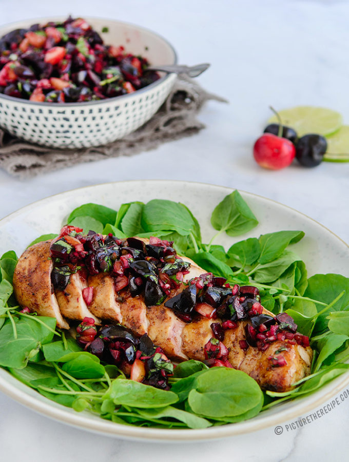

Grilled-chicken-with-fresh-cherry-salsa
 source
Description
Juicy grilled chicken breasts, topped with a delicious ruby-red cherry salsa, made from the season’s best local cherries.
Quick, easy and super yummy, this the ultimate summer plate!
Ingredients
- 2 Chicken Breasts
- 1 Tbsp Olive Oil
- 1 tsp Salt (or to taste)
- 1/4 tsp pepper (or to taste)
- 1 tsp Chipotle Powder
- 2 cups sweet cherries pitted & chopped
- 1/2 medium jalapeno seeded, ribs removed (for more heat add more with the seeds & ribs)
- 1/4 cup shallot, finely diced
- 1/4 cup cilantro leaves chopped
- 1 tbsp balsamic vinegar Juice of 1 lime
- Salt and pepper to taste
Steps
- - Mix together the oil, salt, pepper and chipotle pepper powder and rub the mix into the chicken breasts well.
- - Allow the chicken to marinate for a bit while you prepare the cherry salsa.
- - Roughly chop pitted cherries and put them in bowl.
- - Add finely diced shallot (or red onion), chopped jalapeno and chopped fresh cilantro.
- - Add salt, pepper, balsamic vinegar and squeeze in fresh lime juice.
- - Mix well and allow all the flavors to meld by letting it sit out till you grill the chicken or cover and refrigerate for later.
- - Place the chicken breasts in a large ziplock bag and pound them using a heavy pan or rolling pin to uniform thickness.
- - Heat a grill pan over a medium-high heat or fire up the BBQ.
- - Grill the chicken breasts over a medium-high heat for 4-6 mins a side, or until cooked through. Let the cooked chicken rest for 5 mins.
- - Slice and place chicken on a plate (on a bed of salad leaves if you'd like) and spoon the fresh cherry salsa generously on top.